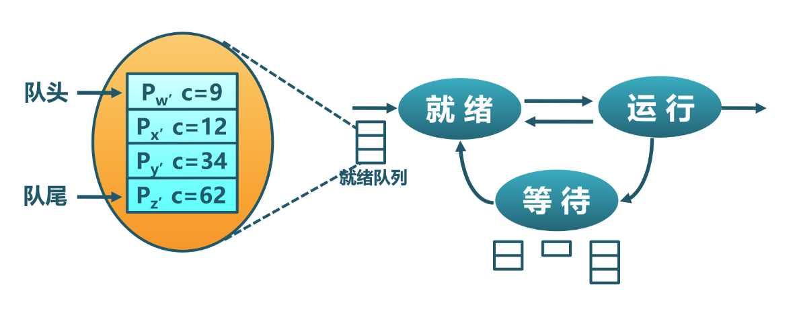
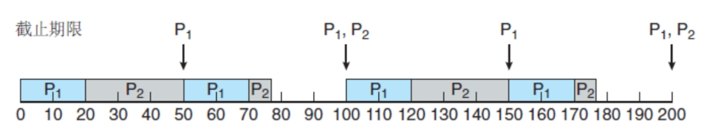
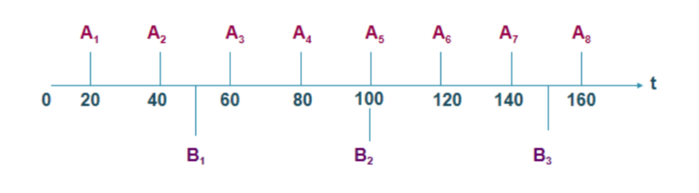
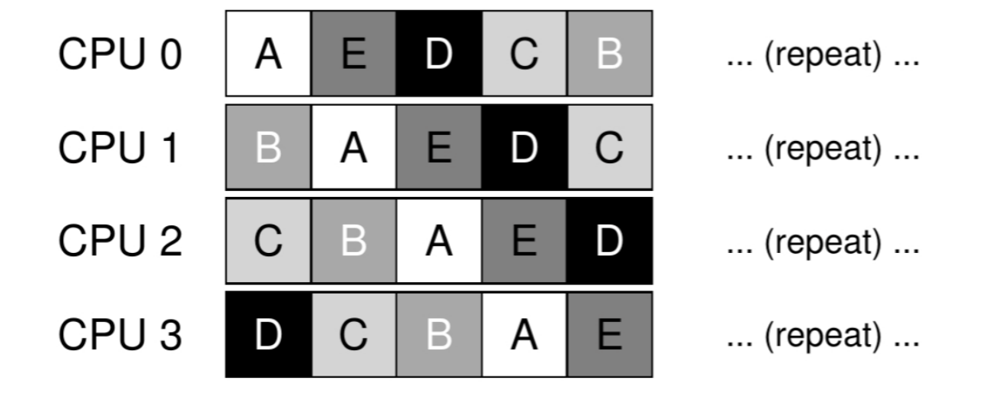

进程调度#
本节导读#
计算机内存中可执行的程序个数大于处理器个数时，这些程序可通过共享处理器来完成各自的任务。而操作系统负责让它们能够高效合理地共享处理器资源，这就引入了调度（scheduling）这个概念。进程调度（也称处理器调度）是进程管理的重要组成部分。
在计算机出现之前，调度这个概念就出现在人类的生活与工作环境中了，如在商店排队购买商品、汽车装配线调度、工厂作业车间调度等。调度的一般定义是：在一定的约束条件下，把有限的资源在时间上分配给若干个任务，以满足或优化一个或多个性能指标。对于计算机系统而言，就是在一台计算机中运行了多个进程，操作系统把有限的处理器在时间上分配给各个进程，以满足或优化进程执行的性能指标。
所以本节要阐述的核心问题是： 操作系统如何通过进程调度来提高进程和系统的性能 。我们可以把这个问题进一步细化为操作系统的一系列关键子问题：
运行进程的约束条件是啥？
有哪些调度策略和算法？
调度的性能指标是啥？
如何评价调度策略和算法？
回顾历史#
本章之前的操作系统实例#
本章之前已经实现了多个操作系统实例，它们相对比较简单，重点体现各种操作系统核心知识点的设计与实现。对于 处理器调度 这个核心知识点，从面向批处理的“邓式鱼” 操作系统开始，就有非常简单的设计与实现。
最早的“三叶虫”操作系统以库的形式支持单个裸机应用程序，单个应用程序独占整个计算机系统，这时还没有调度的必要性。在批处理系统中，需要支持多个程序运行，“邓式鱼” 操作系统把要执行的应用按名字排名的先后顺序，按一次加载一个应用的方式把应用放入内存中。当一个应用执行完毕后，再加载并执行下一个应用。这就是一种简单的“排名”调度策略。
面向多道程序的“锯齿螈”操作系统可以把多个要执行的程序放到内存中，其调度策略与“邓式鱼” 操作系统一样，也是“排名”调度策略。当进化到“始初龙”操作系统后，我们把运行的程序称为任务，并且任务可以主动放弃处理器。操作系统会把各个任务放到一个调度队列中，从队列头选择一个任务执行。当任务主动放弃处理器或任务执行完毕后，操作系统从队列头选择下一个任务执行，并把主动放弃处理器的任务安置在队列尾。这是一种先来先服务的调度策略，实现起来非常简单。
进一步进化的面向分时多任务的“腔骨龙”操作系统继承了始初龙”操作系统的调度策略和组织方式，也会把各个任务放到一个调度队列中，并从队列头选择一个任务执行。但它还考虑了应用间的公平性和系统的执行效率。为此，它给每个任务分配了一个固定的时间片。当正在执行的任务消耗完分配给它的时间片后，操作系统就可以通过时钟中断抢占正在执行的任务，把处理器分配给其他任务执行，而被抢占的任务将放置到队列尾。这是一种基于时间片的轮转调度策略。后续的支持地址空间的“头甲龙”操作系统和支持进程的“伤齿龙”操作系统都采用了这种轮转调度策略。
计算机发展历史中的调度#
早期应用主要面向计算密集型的科学计算，用户对与计算机交互的需求还不强。在早期以纸带、卡片或磁带作为程序/数据输入的批处理系统时代，操作系统的调度很简单，只需依次加载并运行每一个作业（应用以作业的形式存在）即可。操作系统不需要考虑多用户，分时复用等情况，能让程序正常运行就很不错了。
到了多道程序系统时代，内存中存在多个应用，而应用是属于不同用户的，处理器是用户都想占用的宝贵资源。操作系统需要尽量加快应用的执行，减少用户等待应用执行结果的时间，从而提高用户的满意度。这时的调度策略主要考虑如何尽可能地让处理器一直忙起来，减少完成应用的时间。
随着用户对与计算机交互的需求越来越强烈，导致批处理任务（计算密集型应用）和交互任务（I/O密集型应用）都需要在计算机系统上执行。计算机科学家不得不花费更大心思在操作系统的调度上，以应对不同性能指标的任务要求。这一阶段的计算机系统还是以昂贵的大型机/小型机为主，服务的用户主要来源于科学计算和商业处理等科研机构和公司，他们希望把计算机系统的性能榨干，能及时与计算机进行交互，这样才对得起他们付出的大量金钱。
当发展到了个人计算机时代，计算机的价格大幅下降，个人计算机上的多数应用相对简单，对处理器的性能要求不高，但需要通过键盘/鼠标/图形显示等I/O设备来展示其丰富多彩的功能。这样造成的结果是，早期操作系统面向多用户的调度功能在相对简单的单用户个人计算机上作用并不显著。
随着网络和计算机技术的发展，支持并行的多核处理器已经成为处理器的主流，以数据中心为代表的大规模网络服务器集群系统改变了我们的生活。各种日常应用（搜索、网络社交、网络游戏等）会消耗数据中心中大量的处理器资源和网络/存储资源，多个后端服务应用经常会竞争处理器，因此操作系统的调度功能再一次变得至关重要，且要应对更加复杂多样的应用需求和硬件环境。
当移动互联网成为基础设施，移动终端越来越普及，大家几乎人手一台智能手机、智能平板或智能手表等，人们关注的除了流畅地执行各种应用外，还希望这些移动终端能够长时间使用。这使得除了增加电池容量外，操作系统还能在应用不必运行时，让它们尽量休眠，并通过关闭可暂时不用的外设，来减少电量的消耗。可以看到，随着计算机系统的发展和应用需求的变化，操作系统的调度功能也会有新的变化。
虽然各个实际操作系统的调度策略比较复杂，但其基本的设计思路是可以分析清楚的。接下来，我们将针对不同计算机系统特点，简化其中的应用执行过程，形成在该系统下应用执行的约束条件；并进一步分析其对应的性能指标，提出有针对性的设计思路，阐述各种可行的调度策略。
批处理系统的调度#
在设计具体的调度策略之前，需要了解计算机系统和应用的运行环境，对应用的特点和它期望的性能指标也要清楚。我们先看看批处理系统下的应用的特点和约束条件。在批处理系统下，应用以科学计算为主，I/O操作较少，且I/O操作主要集中在应用开始和结束的一小段时间，应用的执行时间主要消耗在占用处理器进行计算上，且应用的大致执行时间一般可以预估到。
约束条件#
批处理系统中的进程有如下一些约束/前提条件：
每个进程同时到达。
每个进程的执行时间相同。
进程的执行时间是已知的。
进程在整个执行过程期间很少执行I/O操作。
进程在执行过程中不会被抢占。
对于条件4，可理解为在操作系统调度过程中，可以忽略进程执行I/O操作的开销。我们这里设定的各种条件是可以调整的，即可以进一步简化或更加贴近实际情况，这样可以简化或加强对调度策略的设计。比如，我们可以把条件 2 改变一下：
每个进程的执行时间不同。
性能指标#
我们还需给出性能指标，用于衡量，比较和评价不同的调度策略。对于批处理系统中的一般应用而言，可以只有一个性能指标：周转时间（turn around time），即进程完成时间与进程到达时间的差值：
由于前提条件1 明确指出所有进程在同一时间到达，那么 \(T_{到达时间} = 0\) ，因此 \(T_{周转时间} = T_{完成时间}\) 。除了总的周转时间，我们还需要关注平均周转时间这样的统计值：
对于单个进程而言，平均周转时间是一个更值得关注的性能指标。
先来先服务#
先来先服务（first-come first-severd，也称First-in first-out，先进先出）调度策略的基本思路就是按进程请求处理器的先后顺序来使用处理器。在具体实现上，操作系统首先会建立一个就绪调度队列（简称就绪队列）和一个等待队列（也称阻塞队列）。大致的调度过程如下：
操作系统每次执行调度时，都是从就绪队列的队头取出一个进程来执行；
当一个应用被加载到内存，并创建对应的进程，设置进程为就绪进程，按进程到达的先后顺序，把进程放入就绪调度队列的队尾；
当正在运行的进程主动放弃处理器时，操作系统会把该进程放到就绪队列末尾，并从就绪队列头取出一个进程执行；
当正在运行的进程执行完毕时，操作系统会回收该进程所在资源，并从就绪队列头取出一个进程执行；
当正在运行的进程需要等待某个事件或资源时，操作系统会把该进程从就绪队列中移出，放到等待队列中（此时这个进程从就绪进程变成等待进程），并从就绪队列头取出下一个进程执行；
当等待进程所等待的某个事件出现或等待的资源得到满足时，操作系统会把该进程转为就绪进程，并会把该进程从等待队列中移出，并放到就绪队列末尾。

该调度策略的优点是简单，容易实现。对于满足1~5约束条件的执行环境，用这个调度策略的平均周转时间性能指标也很好。如果在一个在较长的时间段内，每个进程都能结束，那么公平性这个指标也是能得到保证的。
操作系统不会主动打断进程的运行。
最短作业优先#
满足1~5的约束条件的执行环境太简化和理想化了，在实际系统中，每个应用的执行时间很可能不同，所以约束条件2“每个进程的执行时间相同”就不合适了。如果把约束条件2改为 “每个进程的执行时间不同”，那么在采用先来先服务调度策略的系统中，可能就会出现短进程不得不等长进程结束后才能运行的现象，导致短进程的等待时间太长，且系统的平均周转时间也变长了。
假设有两个进程PA、PB，它们大致同时到达，但PA稍微快一点，进程PA执行时间为100，进程PB的执行时间为20。如果操作系统采用先来先服务的调度策略，进程的平均周转时间为：
(100+120)/2 = 110
但如果操作系统先调度进程PB，那么进程的平均周转时间为：
(20+120)/2 = 70
可以看到，如果采用先来先服务调度策略，执行时间短的进程（简称短进程）可被排在执行时间长的进程（长进程）后面，导致进程的平均周转时间变长。
为应对短进程不得不等长进程结束后才能运行的问题，我们可以想到一个调度的方法：优先让短进程执行。这就是最短作业优先（Shortest Job First，简称SJF）调度策略。其实上面让PB先执行的调度方法，就是采用了最短作业优先策略。
{kind=link}
在更新约束条件2的前提下，如果我们把平均周转时间作为唯一的性能指标，那么SJF是一个最优调度算法。这可以用数学方法进行证明。如果有同学感兴趣，可以试试。

虽然SJF调度策略在理论上表现很不错，但在具体实现中，需要对处于就绪队列上的进程按执行时间进行排序，这会引入一定的调度执行开销。而且如果进一步放宽约束，贴近实际情况，SJF就会显现出它的不足。如果我们放宽约束条件1：
每个进程可以在不同时间到达。
那么可能会发生一种情况，当前正在运行的进程还需 k 执行时间才能完成，这时来了一个执行时间为 h 的进程，且 h < K ，但根据约束条件5，操作系统不能强制切换正在运行的进程。所以，在这种情况下，最短作业优先的含义就不是那么确切了，而且在理论上，SJF也就不是最优调度算法了。
例如，操作系统采用SJF调度策略（不支持抢占进程），有两个进程，PA在时间0到达，执行时间为100， PB在时间20到达，执行时间为20，那么周转时间为
(100 -0) + (120-20) = 200
平均周转时间为 100 。
交互式系统的调度#
交互式系统是指支持人机交互和各种I/O交互的计算机系统。可抢占任务执行的分时多任务操作系统对人机交互性和I/O及时响应更加友好，对进程特征的约束条件进一步放宽，进程的 可抢占特性 需要我们重新思考如何调度。
约束条件#
交互式系统中的进程有如下一些约束/前提条件：
每个进程可不同时间到达。
每个进程的执行时间不同。
进程的执行时间是已知的。
进程在整个执行过程期间会执行I/O操作。
进程在执行过程中会被抢占。
相对于批处理操作系统，约束条件4发生了变化，这意味着在进程执行过程中，操作系统不能忽视其I/O操作。约束条件5也发生了改变，即进程可以被操作系统随时打断和抢占。
性能指标#
操作系统支持任务/进程被抢占的一个重要目标是提高用户的交互性体验和减少I/O响应时间。用户希望计算机系统能及时响应他发出的I/O请求（如键盘、鼠标等），但平均周转时间这个性能指标不足以反映人机交互或I/O响应的性能。所以，我们需要定义新的性能指标 – 响应时间（response time）：
而对应的平均响应时间是：
例如，操作系统采用SJF调度策略（不支持抢占进程），有两个进程，PA在时间0到达，执行时间为100， PB在时间20到达，执行时间为20，那么PA的响应时间为0，PB为80，平均响应时间为 40 。
最短完成时间优先（STCF）#
由于约束条件5表示了操作系统允许抢占，那么我们就可以实现一种支持进程抢占的改进型SJF调度策略，即最短完成时间优先（Shortest Time to Complet First）调度策略。
基于前述的例子，操作系统采用STCF调度策略，有两个进程，PA在时间0到达，执行时间为100， PB在时间20到达，执行时间为20，那么周转时间为
（120 - 0) + (40 - 20) = 140
平均周转时间为 70 。可以看到，如果采用STCF调度策略，相比于SJF调度策略，在周转时间这个性能指标上得到了改善。
但对于响应时间而言，可能就不这么好了。考虑一个例子，有两个用户发出了执行两个进程的请求，且两个进程大约同时到达，PA和PB的执行时间都为20。我们发现，无论操作系统采用FIFO/SJF/STCF中的哪一种调度策略，某一个用户不得不等待20个时间单位后，才能让他的进程开始执行，这是一个非常不好的交互体验。从性能指标上看，响应时间比较差。 这就引入了新的问题：操作系统如何支持看重响应时间这一指标的应用程序？
基于时间片的轮转#
如果操作系统分给每个运行的进程的运行时间是一个足够小的时间片（time slice，quantum），时间片一到，就抢占当前进程并切换到另外一个进程执行。这样进程以时间片为单位轮流占用处理器执行。对于交互式进程而言，就有比较大的机会在较短的时间内执行，从而有助于减少响应时间。这种调度策略称为轮转（Round-Robin，简称RR）调度，即基本思路就是从就绪队列头取出一个进程，让它运行一个时间片，然后把它放回到队列尾，再从队列头取下一个进程执行，周而复始。

在具体实现上，需要考虑时间片的大小，一般时间片的大小会设置为时钟中断的时间间隔的整数倍。比如，时钟中断间隔为1ms，时间片可设置为10ms，两个用户发出了执行两个进程的请求，且两个进程大约同时到达，PA和PB的执行时间都为20s(即20,000ms)。如果采用轮转调度，那么进程的响应时间为:
0+10 = 10ms
平均响应时间为：
(0+10)/2 = 5ms
这两个值都远小于采用之前介绍的三种调度策略的结果。 这看起来不错，而且，直观上可以进一步发现，如果我们进一步减少时间片的大小，那么采用轮转调度策略会得到更好的响应时间。但其实这是有潜在问题的，因为每次进程切换是有切换代价的，参考之前介绍的进程切换的实现，可以看到，进程切换涉及多个寄存器的保存和回复操作，页表的切换操作等。如果进程切换的时间开销是0.5ms，时间片设置为1ms，那么会有大约50%的时间用于进程切换，这样进程实际的整体执行时间就大大减少了。所以，我们需要通过在响应时间和进程切换开销之间进行权衡。不能把时间片设置得太小，且让响应时间在用户可以接受的范围内。
看来轮转调度对于响应时间这个指标很友好。但如果用户也要考虑周转时间这个指标，那轮转调度就变得不行了。还是上面的例子，我们可以看到，PA和PB两个进程几乎都在40s左右才结束，这意味着平均周转时间为：
(40+40)/2 = 40s
这大于基于SJF的平均周转时间：
((20-0) + (40-0))/2 = 30s
如果活跃进程的数量增加，我们会发现轮转调度的平均周转时间会进一步加强。也许有同学会说，那我们可以通过调整时间片，把时间片拉长，这样就会减少平均周转时间了。但这样又会把响应时间也给增大了。而且如果把时间片无限拉长，轮转调度就变成了FCFS调度了。
到目前为止，我们看到以SJF为代表的调度策略对周转时间这个性能指标很友好，而以轮转调度为代表的调度策略对响应时间这个性能指标很友好。但鱼和熊掌难以兼得。
通用计算机系统的调度#
个人计算机和互联网的发展推动了计算机的广泛使用，并出现了新的特点，内存越来越大，各种I/O设备成为计算机系统的基本配置，一般用户经常和随时使用交互式应用（如字处理、上网等），驻留在内存中的应用越来越多，应用的启动时间和执行时间无法提前知道。而且很多情况下，处理器大部分时间处于空闲状态，在等待用户或其它各种外设的输入输出操作。
约束条件#
这样，我们的约束条件也随之发生了新的变化：
每个进程可不同时间到达。
每个进程的执行时间不同。
进程的启动时间和执行时间是未知的。
进程在整个执行过程期间会执行I/O操作。
进程在执行过程中会被抢占。
可以看到，其中的第3点改变了，导致进程的特点也发生了变化。有些进程为I/O密集型的进程，大多数时间用于等待外设I/O操作的完成，需要进程能及时响应。有些进程是CPU密集型的，大部分时间占用处理器进行各种计算，不需要及时响应。还有一类混合型特点的进程，它在不同的执行阶段有I/O密集型或CPU密集型的特点。这使得我们的调度策略需要能够根据进程的动态运行状态进行调整，以应对各种复杂的情况。
性能指标#
如果把各个进程运行时间的公平性考虑也作为性能指标，那么我们就需要定义何为公平。我们先给出一个公平的描述性定义：在一个时间段内，操作系统对每个个处于就绪状态的进程均匀分配占用处理器的时间。
这里需要注意，为了提高一个性能指标，可能会以牺牲其他性能指标作为代价。所以，调度策略需要综合考虑和权衡各个性能指标。在其中找到一个折衷或者平衡。
多级反馈队列调度#
在无法提前知道进程执行时间的前提下，如何设计一个能同时减少响应时间和周转时间的调度策略是一个挑战。不过计算机科学家早就对此进行深入分析并提出了了解决方案。在1962年，MIT的计算机系教授Fernando Jose Corbato(1990年图灵奖获得者)首次提出多级反馈队列（Multi-level Feedback Queue，简称MLFQ）调度策略，并用于当时的CTSS（兼容时分共享系统）操作系统中。
Corbato教授的思路很巧妙，用四个字来总结，就是 以史为鉴 。即根据进程过去一段的执行特征来预测其未来一段时间的执行情况，并以此假设为依据来动态设置进程的优先级，调度子系统选择优先级最高的进程执行。这里可以看出，进程有了优先级的属性，而且进程的优先级是可以根据过去行为的反馈来动态调整的，不同优先级的进程位于不同的就绪队列中。
接下来，我们逐步深入分析多级反馈队列调度的设计思想。
固定优先级的多级无反馈队列#
MLFQ调度策略的关键在于如何设置优先级。一旦设置好进程的优先级，MLFQ总是优先执行位于高优先级就绪队列中的进程。对于挂在同一优先级就绪队列中的进程，采用轮转调度策略。
先考虑简单情况下，如果我们提前知道某些进程是I/O密集型的，某些进程是CPU密集型的，那么我们可以给I/O密集型设置高优先级，而CPU密集型进程设置低优先级。这样就绪队列就变成了两个，一个包含I/O密集型进程的高优先级队列，一个是处理器密集型的低优先级队列。
那我们如何调度呢？MLFQ调度策略是先查看高优先级队列中是否有就绪进程，如果有，就执行它，然后基于时间片进行轮转。由于位于此高优先级队列中的进程都是I/O密集型进程，所以它们很快就会处于阻塞状态，等待I/O设备的操作完成，这就会导致高优先级队列中没有就绪进程。
在高优先级队列没有就绪进程的情况下，MLFQ调度策略就会从低优先级队列中选择CPU密集型就绪进程，同样按照时间片轮转的方式进行调度。如果在CPU密集型进程执行过程中，某个I/O密集型进程所等待的I/O设备的操作完成了，那么操作系统会打断CPU密集型进程的执行，以及时响应该中断，并让此I/O密集型进程从阻塞状态变成就绪态，重新接入到高优先级队列的尾部。这时调度子系统会优先选择高优先级队列中的进程执行，从而抢占了CPU密集型进程的执行。
这样，我们就得到了MLFQ的基本设计规则：
如果进程PA的优先级 > PB的优先级，抢占并运行PA。
如果进程PA的优先级 = PB的优先级，轮转运行PA和PB。
但还是有些假设过于简单化了，比如：
通常情况下，操作系统并不能提前知道进程是I/O密集型还是CPU密集型的。
I/O密集型进程的密集程度不一定一样，所以把它们放在一个高优先级队列中体现不出差异。
进程在不同的执行阶段会有不同的特征，可能前一阶段是I/O密集型，后一阶段又变成了CPU密集型。
而在进程执行过程中固定进程的优先级，将难以应对上述情况。
可降低优先级的多级反馈队列#
改进的MLFQ调度策略需要感知进程的过去执行特征，并根据这种特征来预测进程的未来特征。简单地说，就是如果进程在过去一段时间是I/O密集型特征，就调高进程的优先级；如果进程在过去一段时间是CPU密集型特征，就降低进程的优先级。 由于会动态调整进程的优先级，所以，操作系统首先需要以优先级的数量来建立多个队列。当然这个数量是一个经验值，比如Linux操作系统设置了140个优先级。
那如何动态调整进程的优先级呢？首先，我们假设新创建的进程是I/O密集型的，可以把它设置为最高优先级。接下来根据它的执行表现来调整其优先级。如果在分配给它的时间配额内，它睡眠或等待I/O事件完成而主动放弃了处理器，操作系统预测它接下来的时间配额阶段很大可能还是具有I/O密集型特征，所以就保持其优先级不变。如果进程用完了分配给它的时间配额，操作系统预测它接下来有很大可能还是具有CPU密集型特征，就会降低其优先级。 这里的时间配额的具体值是一个经验值，一般是时间片的整数倍。
这样，如果一个进程的执行时间小于分配给它的一个或几个时间配额，我们把这样的进程称为短进程。那么这个短进程会以比较高的优先级迅速地结束。而如果一个进程有大量的I/O操作，那么一般情况下，它会在时间配额结束前主动放弃处理器，进入等待状态，一旦被唤醒，会以原有的高优先级继续执行。如果一个进程的执行时间远大于几个时间配额，我们把这样的进程称为长进程。那么这个长进程经过一段时间后，会处于优先级最底部的队列，只有在没有高优先级进程就绪的情况下，它才会继续执行，从而不会影响交互式进程的响应时间。
这样，我们进一步扩展了MLFQ的基本规则：
创建进程并让进程首次进入就绪队列时，设置进程的优先级为最高优先级。
进程用完其时间配额后，就会降低其优先级。
虽然这样的调度看起来对短进程、I/O密集型进程或长进程的支持都还不错。但这样的调度只有降低优先级的操作，对于某些情况还是会应对不足。比如：
一个进程先执行了一段比较长时间的CPU密集型任务，导致它到了底部优先级队列，然后它在下一阶段执行I/O密集型任务，但被其他高优先级任务阻挡了，难以减少响应时间。
在计算机系统中有大量的交互型进程，虽然每个进程执行时间短，但它们还是会持续地占用处理器，追导致位于低优先级的长进程一直无法执行，出现饥饿（starvation）现象。
这主要是调度策略还缺少提升优先级的灵活规则。
可提升/降低优先级的多级反馈队列#
对于可降低优先级的多级反馈队列调度策略难以解决的上述情况1和2，我们需要考虑如何提升某些进程的优先级。一个可以简单实现的优化思路是，每过一段时间，周期性地把所有进程的优先级都设置为最高优先级。这样长进程不会饿死；而被降到最低优先级的进程，如果当前处于I/O密集型任务，至少在一段时间后，会重新减少其响应时间。不过这个“一段时间”的具体值如何设置？看起来又是一个经验值。这样，我们又扩展了MLFQ的基本规则。
经过一段时间，把所有就绪进程重新加入最高优先级队列。
但这样就彻底解决问题了吗？其实还不够，比如对于优先级低且处于I/O密集型任务的进程，必须等待一段时间后，才能重新加入到最高优先级，才能减少响应时间。难道这样的进程不能不用等待一段时间吗？
而对于长进程，如果有不少长进程位于最低优先级，一下子把它们都提升为最高优先级，就可能影响本来处于最高优先级的交互式进程的响应时间。看来，第5条规则还有进一步改进的空间，提升优先级的方法可以更灵活一些。
先看长进程，可以发现，所谓长进程“饥饿”，是指它有很长时间没有得到执行了。如果我们能够统计其在就绪态没有被执行的等待时间长度，就可以基于这个动态变量来逐步提升其优先级。比如每过一段时间，查看就绪进程的等待时间（进程在就绪态的等待时间）长度，让其等待时间长度与其优先级成反比，从而能够逐步第动态提升长进程的优先级。
再看优先级低且处于I/O密集型任务的进程，可以发现，它也有很长时间没有得到执行的特点，这可以通过上面的逐步提升优先级的方法获得执行的机会，并在执行I/O操作并处于等待状态，但此时的优先级还不够高。但操作系统在I/O操作完成的中断处理过程中，统计其I/O等待时间（进程在阻塞态下的等待时间），该进程的I/O等待时间越长，那么其优先级的提升度就越高，这可以使其尽快到达最高优先级。
这样根据就绪等待时间和阻塞等待时间来提升进程的优先级，可以比较好第应对上面的问题。我们可以改进第5条规则：
定期统计进程在就绪态/阻塞态的等待时间，等待时间越长，其优先级的提升度就越高。
对于就绪态等待时间对应的优先级提升度一般时小于阻塞态等待时间对应的优先级提升度，从而让调度策略优先调度当前具有I/O密集型任务的进程。
经过我们总结出来的MLFQ调度规则，使得操作系统不需要对进程的运行方式有先验知识，而是通过观测和统计进程的运行特征来给出对应的优先级，使得操作系统能灵活支持各种运行特征的应用在计算机系统中高效执行。
公平份额调度#
在大公司的数据中心中有着大量的计算机服务器，给互联网上的人们提供各种各样的服务。在这样的服务器中，有着相对个人计算机而言更加巨大的内存和强大的计算处理能力，给不同用户提供服务的各种进程的数量也越来越多。这个时候，面向用户或进程相对的公平性就是不得不考虑的一个问题，甚至时要优先考虑的性能指标。比如，在提供云主机的数据中心中，用户可能会希望分配20%的处理器时间给Windows虚拟机，80%的处理器时间给Linux系统，如果采用公平份额调度的方式可以更简单高效。
从某种程度上看，MLFQ调度策略总提到的优先级就是对公平性的一种划分方式，有些进程优先级高，会更快地得到处理器执行，所分配到的处理器时间也多一些。但MLFQ并不是把公平性放在第一位。如果把公平性放在首位，我们就可以设计出另外一类调度策略 – 公平份额（Fair Share，又称为 比例份额，Proportional Share）调度。其基本思路是基于每个进程的重要性（即优先级）的比例关系，分配给该进程同比例的处理器执行时间。
在1993~1994年，MIT的计算机系博士生Carl A. Waldspurger 和他的导师 William E. Weihl提出了与众不同的调度策略：彩票调度（Lottery Scheduling）和步长调度（Stride Scheduling）。它们都属于公平份额调度策略。彩票调度很有意思，它是从经济学的的彩票行为中吸取营养，模拟了购买彩票和中奖的随机性，给每个进程发彩票，进程优先级越高，所得到的彩票就越多；然后每隔一段时间（如，一个时间片），举行一次彩票抽奖，抽出来的号属于哪个进程，哪个进程就能运行。
例如，计算机系统中有两个进程PA和PB，优先级分别为2和8，这样它们分别拥有2张（编号为0-1）和8张彩票（编号为2-9），按照彩票调度策略，操作系统会分配PA大约20%的处理器时间，而PB会分配到大约80%的处理器时间。
其具体实现过程是，在每个时间片到时，操作系统就抽取彩票，由于操作系统已知总彩票数有10张，所以操作系统产生一个从0和9之间随机数作为获奖彩票号，拥有这个彩票号的进程中奖，并获得下一次处理器执行机会。通过在一段较长的时间内不断地抽彩票，基于统计学，可以保证两个两个进程可以获得与优先级等比例的处理器执行时间。
这个彩票调度的优势有两点，第一点是可以解决饥饿问题，即使某个低优先级进程获得的彩票比较少，但经过比较长的时间，按照概率，会有获得处理器执行的时间片。第二点是调度策略的实现开销小，因为它不像之前的调度策略，还需要记录、统计、排序、查找历史信息（如统计就绪态等待时间等），彩票调度几乎不需要记录任何历史信息，只需生产一个随机数，然后查找该随机数应该属于那个进程即可。
但彩票调度虽然想法新颖，但有一个问题：如何为进程分配彩票？如果创建进程的用户清楚进程的优先级，并给进程分配对应比例的彩票，那么看起来这个问题就解决了。但彩票调度是在运行时的某个时刻产生一个随机值，并看这个随机值属于当前正在运行中的进程集合中的哪一个进程。而用户无法预知，未来的这个时刻，他创建的进程与当时的那些进程之间的优先级相对关系，这会导致公平性不一定能得到保证。
另外一个问题是，基于概率的操作方法的随机性会带来不确定性，特别是在一个比较短的时间段里面，进程间的优先级比例关系与它们获得的处理器执行时间的比例关系之间有比较大的偏差，只有在执行时间很长的情况下，它们得到的处理器执行时间比例会比较接近优先级比例。
注解
能否用彩票来表示各种计算机资源的份额？
彩票调度中的彩票表示了进程所占处理器时间的相对比例，那么能否用彩票来表示进程占用内存或其他资源的相对比例？
为了解决彩票调度策略中的偶然出现不准确的进程执行时间比例的问题。Waldspurger等进一步提出了步长调度（Stride Scheduling）。这是一个确定性的公平配额调度策略。其基本思路是：每个进程有一个步长（Stride）属性值，这个值与进程优先级成反比，操作系统会定期记录每个进程的总步长，即行程（pass），并选择拥有最小行程值的进程运行。
例如，计算机系统中有两个进程PA和PB几乎同时到达，优先级分别为2和8，用一个预设的大整数（如1000）去除以优先级，就可获得对应的步长，这样它们的步长分别是500和125在具体执行时，先选择PA执行，它在执行了一个时间片后，其行程为500；在接下来的4个时间片，将选择执行行程少的PB执行，它在连续执行执行4个时间片后，其形成也达到了500；并这样周而复始地执行下去，直到进程执行结束。，按照步长调度调度策略，操作系统会分配PA大约20%的处理器时间，而PB会分配到大约80%的处理器时间。
比较一下这两种调度策略，可以看出彩票调度算法只能在一段比较长的时间后，基于概率上实现优先级等比的时间分配，而步长调度算法可以在每个调度周期后做到准确的优先级等比的时间分配。但彩票算法的优势是几乎不需要全局信息，这在合理处理新加入的进程时很精炼。比如一个新进程开始执行时，按照步长调度策略，其行程值为0，那么该进程将在一段比较长的时间内一直占用处理器执行，这就有点不公平了。如果要设置一个合理的进程值，就需要全局地统计每个进程的行程值，这就带来了比较大的执行开销。但彩票调度策略不需要统计每个进程的彩票数，只需用新进程的票数更新全局的总票数即可。
实时计算机系统的调度#
计算机系统的应用领域非常广泛，如机器人、物联网、军事、工业控制等。在这些领域中，要求计算机系统能够实时响应，如果采用上述调度方式，不能满足这些需求，这对操作系统提出了新的挑战。
这里，我们首先需要理解实时的含义。实时计算机系统通常可以分为硬实时（Hard Real Time）和软实时（Soft Real Time）两类，硬实时是指任务完成时间必须在绝对的截止时间内，如果超过意味着错误和失败，可能导致严重后果。软实时是指任务完成时间尽量在绝对的截止时间内，偶尔超过可以接受。
实时的任务是由一组进程来实现，其中每个进程的行为是可预测和提前确定的。这些进程称为实时进程，它们的执行时间一般较短。支持实时任务的操作系统称为实时操作系统。

约束条件#
实时计算机系统是一种以确定的时间范围起到主导作用的计算机系统，一旦外设发给计算机一个事件（如时钟中断、网络包到达等），计算机必须在一个确定时间范围内做出响应。
实时计算机系统中的事件可以按照响应方式进一步分类为周期性（以规则的时间间隔发生）事件或非周期性（发生时间不可预知）事件。一个系统可能要响应多个周期性事件流。根据每个事件需要处理时间的长短，系统甚至有可能无法处理完所有的事件。
这样，实时计算机系统的约束条件也随之发生了新的变化：
每个进程可不同时间到达。
每个进程的执行时间不同。
进程的启动时间和执行时间是未知的。
进程在整个执行过程期间会执行I/O操作。
进程在执行过程中会被抢占。
进程的行为是可预测和提前确定的，即进程在独占处理器的情况下，执行时间的上限是可以提前确定的。
触发进程运行的事件需要进程实时响应，即进程要在指定的绝对截止时间内完成对各种事件的处理。
这里主要增加了第6和7点。第6点说明了实时进程的特点，第7点说明了操作系统调度的特点。
性能指标#
对于实时计算机系统而言，进程的周转时间快和响应时间低这样的性能指标并不是最主要的，进程要在指定的绝对的截止时间内完成是第一要务。这里首先需要理解实时计算机系统的可调度性。如果有m个周期事件，事件i以周期时间Pi 发生，并需要Ci 时间处理一个事件，那么计算机系统可以处理任务量（也称负载）的条件是：
SUM(Ci/Pi) <= 1
能满足这个条件的实时计算机系统是可实时调度的。
满足这个条件的实时系统称为是可调度的。例如，一个具有两个周期性事件的计算机系统，其事件周期分别是20ms、80ms。如果这些事件分别需要10ms、20ms来进行处理，那么该计算机系统是可实时调度的，因为
(10/20)+ (20/80) = 0.75 ＜ 1
如果再增加第三个周期事件，其周期是100ms，需要50ms的时间来处理，我们可以看到：
(10/20)+ (20/80) + (50/100) = 1.25 > 1
这说明该计算机系统是不可实时调度的。
实时计算机系统的调度策略/算法可以是静态或动态的。静态调度在进程开始运行之前就作出调度决策；而动态调度要在运行过程中进行调度决策。只有在预知进程要所完成的工作时间上限以及必须满足的截止时间等全部信息时，静态调度才能工作；而动态调度则不需要这些前提条件。
速率单调调度#
速率单调调度（Rate Monotonic Scheduling，RMS）算法是由刘炯朗（Chung Laung Liu）教授和James W. Layland在1973年提出的。该算法的基本思想是根据进程响应事件的执行周期的长短来设定进程的优先级，即执行周期越短的进程优先级越高。操作系统在调度过程中，选择优先级最高的就绪进程执行，高优先级的进程会抢占低优先级的进程。
{kind=link}
该调度算法有如下的前提假设：
每个周期性进程必须在其执行周期内完成，以完成对周期性事件的响应。
进程执行不依赖于任何其他进程。
进程的优先级在执行前就被确定，执行期间不变。
进程可被抢占。
可以看出，RMS调度算法在每个进程执行前就分配给进程一个固定的优先级，优先级等比于进程所响应的事件发生的周期频率，即进程优先级与进程执行的速率（单位时间内运行进程的次数）成线性关系，这正是为什么将其称为速率单调的原因。例如，必须每20ms运行一次（每秒要执行50次）的进程的优先级为50，必须每50ms运行一次（每秒20次）的进程的优先级为20。Liu和Layland证明了在静态实时调度算法中，RMS是最优的。
任务执行中间既不接收新的进程，也不进行优先级的调整或进行CPU抢占。因此这种算法的优点是系统消耗小，缺点是不灵活。一旦该系统的任务决定了，就不能再接收新的任务。
采用抢占的、静态优先级的策略，调度周期性任务。
EDF调度#
另一个典型的实时调度算法是最早截止时间优先（Earliest Deadline First，EDF）算法，其基本思想是根据进程的截止时间来确定任务的优先级。截止时间越早，其优先级就越高。如果进程的截止期相同，则处理时间短的进程优先级高。操作系统在调度过程中，选择优先级最高的就绪进程执行，高优先级的进程会抢占低优先级的进程。
{kind=link}
该调度算法有如下的前提假设：
进程可以是周期性或非周期性的。
进程执行不依赖于任何其他进程。
进程的优先级在执行过程中会基于进程的截止期动态变化。
进程可被抢占。

EDF调度算法按照进程的截止时间的早晚来分配优先级，截止时间越近的进程优先级越高。操作系统在进行进程调度时，会根据各个进程的截止时间重新计算进程优先级，并选择优先级最高的进程执行，即操作系统总是优先运行最紧迫的进程。在不同时刻，两个周期性进程的截止时间的早晚关系可能会变化，所以EDF调度算法是一种动态优先级调度算法。
实时调度实例#
系统中有三个周期性进程PA、PB和PC，它们在一开始就处于就绪状态，它们的执行周期分别是20ms、50ms和100ms，它们响应事件的处理时间分别为5ms、20ms和25ms。操作系统需要考虑如何调度PA、PB和PC，以确保它们在周期性的截止时间（最终时限，即当前执行周期的绝对时间）到来前都能完成各自的任务。
我们先分析一下系统的可调度性：
(5/20) + (20/50) + (25/100)= 0.25+0.4 + 0.25 = 0.9 < 1
可以看到处理器在理论上有10%的空闲时间，不会被超额执行，所以找到一个合理的调度应该是可能的。我们首先看看RMS调度算法，由于进程的优先级只与进程的执行周期成线性关系，所以三个进程的优先级分别为50、20和10。对于RMS调度算法而言，具有如下的调度执行过程：
t=0：在t=0时刻，优先级最高的PA先执行（PA的第一个周期开始），并在5ms时完成；
t=5：在PA完成后，PB接着执行；
t=20：在执行到20ms时（PA的第二个周期开始），PA抢占PB并再次执行，直到25m时结束；
t=25：然后被打断的PB继续执行，直到30ms时结束；
t=30：接着PC开始执行（PC的第一个周期开始）；
t=40：在执行到40ms时（PA的第三个周期开始），PA抢占PC并再次执行，直到45ms结束；
t=45：然后被打断的PC继续执行；
t=50：然后在50ms时（PB的第二个周期），PB抢占PC并再次执行；
t=60：然后在60ms时（PA的第四个周期开始），PA抢占PB并再次执行，直到65ms时结束；
t=65：接着PB继续执行，并在80ms时结束；
t=80：接着PA继续抢占PC（PA的第五个周期开始），在85ms时结束；
t=85：然后PC再次执行，在90ms时结束。
这样，在100ms的时间内，PA执行了5个周期任务，PB执行了2个周期任务，PC执行了1个周期任务。在下一个100ms的时间内，上述过程再次重复。
对于EDF调度算法而言，具有如下的调度执行过程：
t=0：首先选择截止时间最短的PA，所以它先执行（PA的第一个周期开始），并在5ms时完成；
t=5：在PA完成后，截止时间第二的PB接着执行；
t=20：在执行到20ms时（PA的第二个周期开始），PA截止时间40ms小于PB截止时间50ms，所以抢占PB并再次执行，直到25m时结束；
t=25：然后被打断的PB继续执行，直到30ms时结束；
t=30：接着PC开始执行（PC的第一个周期开始）；
t=40：在执行到40ms时（PA的第三个周期开始），PA截止时间40ms小于PC截止时间100ms，PA抢占PC并再次执行，直到45ms结束；
t=45：然后被打断的PC继续执行；
t=50：然后在50ms时（PB的第二个周期），PB截止时间100ms小于等于PC截止时间100ms，PB抢占PC并再次执行；
t=60：然后在60ms时（PA的第四个周期开始），PA截止时间80ms小于PB截止时间100ms，PA抢占PB并再次执行，直到65ms时结束；
t=65：接着PB继续执行，并在80ms时结束；
t=80：接着PA截止时间100ms小于等于PC截止时间100ms，PA继续抢占PC（PA的第五个周期开始），在85ms时结束；
t=85：然后PC再次执行，在90ms时结束。
上述例子的一个有趣的现象是，虽然RMS调度算法与EDF的调度策略不同，但它们的调度过程是一样的。注意，这不是普遍现象，也有一些例子会出现二者调度过程不同的情况，甚至RMS调度无法满足进程的时限要求，而EDF能满足进程的时限要求。同学们能举出这样的例子吗？
多处理器计算机系统的调度#
在2000年前，多处理器计算机的典型代表是少见的高端服务器和超级计算机，但到了2000年后，单靠提高处理器的频率越来越困难，而芯片的集成度还在进一步提升，所以在一个芯片上集成多个处理器核成为一种自然的选择。到目前位置，在个人计算机、以手机为代表的移动终端上，多核处理器（Multi Core）已成为一种普遍的现象，多个处理器核能够并行执行，且可以共享Cache和内存。

之前提到的调度策略/算法都是面向单处理器的，如果把这些策略和算法扩展到多处理器环境下，是否需要解决新问题？
注解
并行处理需要了解更多的硬件并行架构问题和软件的同步互斥等技术，而深入的硬件并行架构目前不在本书的范畴之内，同步互斥等技术在后续章节才介绍。按道理需要先学习这些内容才能真正和深入理解本小节的内容，但本小节的内容在逻辑上都属于进程调度的范畴，所以就放在这里了。建议可以先大致学习本小节内容，在掌握了进程间通信、同步互斥等技术后，再回头重新学习一些本小节内容。
约束条件#
为了理解多处理器调度需要解决的新问题，我们需要理解单处理器计算机与多处理器计算机的基本区别。对于多处理器计算机而言，每个处理器核心会有共享的Cache，也会有它们私有的Cache，而各自的私有Cache中的数据有硬件来保证数据的Cache一致性（也称缓存一致性）。
简单地说，位于不同私有Cache中的有效数据（是某一内存单元的值）要保证是相同的，这样处理器才能取得正确的数据，保证计算的正确性，这就是Cache一致性的基本含义。保证一致性的控制逻辑是由硬件来完成的，对操作系统和应用程序而言，是透明的。
在共享Cache和内存层面，由于多个处理器可以并行访问位于共享Cache和内存中的共享数据，所以需要有后面章节讲解的同步互斥机制来保证程序执行的正确性。这里，我们仅仅介绍一下简单的思路。
以给创建的新子进程设置进程号为例。在单处理器情况下，操作系统用一个整型全局变量保存当前可用进程号，初始值为 0 。给新进程设置新进程号的过程很简单：
新进程号= 当前可用进程号；
当前可用进程号 = 当前可用进程号 + 1；
在多处理器情况下，假设两个位于不同处理器上的进程都发起了创建子进程的系统调用请求，操作系统可以并行地执行创建两个子进程，而且需要给子进程设置一个新的进程号。如果没有一些同步互斥的手段，那么可能出现如下的情况：
t0: ID-PA = CurID ID-PB= CurID t1: CurID = CurID+1 CurID = CurID +1
这样两个新进程的进程号就是一样的了，这就会在后续的执行中出现各种问题。为了正确处理共享变量，就需要用类似互斥锁（Mutex）的方法，让在不同处理器上执行的控制流互斥地访问共享变量，这样就能解决正确性问题。
所以，对于多处理器下运行的进程而言，新增加了如下的假设条件：
运行在不同处理器上的多个进程可用并行执行，但对于共享资源/变量的处理，需要有同步互斥等机制的正确性保证。
性能指标#
这里的性能指标与之前描述的基于单处理器的通用计算机系统一样，主要是周转时间、响应时间和公平性。
单队列调度#
对于多处理器系统而言，两个进程数量多于处理器个数，我们希望每个处理器都执行进程。这一点是之前单处理器调度不会碰到的情况。单处理器的调度只需不断地解答：“接下来应该运行哪个进程？”，而在多处理机中，调度还需解答一个问题：“要运行的进程在哪一个CPU上运行？”。这就增加了调度的复杂性。
如果我们直接使用单处理器调度的数据结构，其中的重点就是放置就绪进程的就绪队列或其他与调度相关的数据结构。那么这些数据结构就是需要互斥访问的共享数据。 为简化分析过程，我们以轮转调度采用的单就绪队列为例，面向多处理器的单队列调度的策略逻辑没有改变，只是在读写/修改就绪队列等共享数据时，需要用同步互斥的一些操作保护起来，确保对这些共享数据访问的正确性。
{kind=link}
采用单队列调度的一个好处是，它支持自动负载平衡，因为决不会出现一个CPU空闲而其他CPU过载的情况。
处理器亲和性
另外，还需考虑的一个性能问题是调度中的处理器亲和性（也称缓存亲和性、调度亲和性）问题。其基本思想是，尽量使一个进程在它前一次运行过的同一个CPU上运行。其原因是，现代的处理器都有私有Cache，基于局部性的考虑，如果操作系统在下次调度时要给该进程选择处理器，会优先选择该进程上次执行所在的处理器，从而使得Cache中缓存的数据可重用，提高了进程执行的局部性。
多队列调度#
如果处理器的个数较多，频繁对共享数据执行同步互斥操作的开销会很大。为此，能想到的一个方法是，还是保持单处理器调度策略的基本逻辑，但把就绪队列或和他与调度相关的数据结构按处理器个数复制多份，这样操作系统在绝大多数情况下，只需访问本处理器绑定的调度相关数据结构，就可用完成调度操作。这样在一个调度控制框架下就包含多个调度队列。当要把一个新进程或被唤醒的进程放入就绪队列时，操作系统可根据一些启发式方法（如随机选择某个处理器上的就绪队列或选择就绪进程数量最少的就绪队列）来放置进程到某个就绪队列。操作系统通过访问本处理器上的调度相关数据结构，就可以选择出要执行的进程，这样就避免了开销大的同步互斥操作。
多队列调度比单队列调度具有更好的可扩展性，多队列的数量会随着处理器的增加而增加，也具有良好的缓存亲和度。当多队列调度也有它自己的问题：负载均衡（Load Balance）问题。

考虑如下的例子，在一个有4个进程，两个处理器的计算机系统中，有两个就绪队列，PA和PB在就绪队列Q1，PC和PD在就绪队列Q2，如果采用基于轮转调度的多队列调度，那么两个处理器可以均匀地让4给进程分时使用处理器。这是一种理想的情况。如果进程PB结束，而调度不进行进一步的干预，那么就会出现PA独占处理器1，PC和PD分时共享处理器2。如果PA也结束了，而调度还不进行进一步的干预，那么（Load Imbalance）就会出现处理器1空闲，而处理器2繁忙的情况，这就是典型的负载不均衡（Load Imbalance）的现象了。这就没有达到轮转调度的意图。
所以多队列调度需要解决负载不均衡的问题。一个简单的思路就是允许进程根据处理器的负载情况从一个处理器迁移到另外一个处理器上。对于上面的例子，如果是处理器1空闲，处理器2繁忙的而情况，操作系统只需把处理器2上的进程分一半，迁移到处理器1即可。当如果是处理器1上运行了PA，处理器2上运行了PC和PD，这就需要统计每个进程的执行时间，根据进程的执行时间，让进程在两个处理器间不停的迁移，达到在一定时间段内，每个进程所占用的处理器时间大致相同，这就达到了轮转调度的意图，并达到了负载均衡。具体处理有多种方式，比如如下方式调度：
处理器1： A A C A A C … 处理器2： C D D C D D …
或者是：
处理器1： A C A A C A … 处理器2： C D D C D D …
当然，这个例子是一种简单的理想情况，实际的多处理器计算机系统中运行的进程行为会很复杂，除了并行执行，还有同步互斥执行、各种I/O操作等，这些都会对调度策略产生影响。
小结#
本节对多种类型的计算机系统和不同类型的应用特征进行了分析，并给出了不同的性能指标，这些都是设计调度策略/算法的前提条件。我们给出了从简单到复杂的多种调度策略和算法，这些策略和方法相对于实际的操作系统而言，还很简单，不够实用，但其中的基本思想是一致的。如果同学们需要了解实际的操作系统调度策略和算法，建议阅读关于UNIX、Linux、Windows和各种RTOS等操作系统内核的书籍和文章，其中有关于这些操作系统的调度策略和算法的深入讲解。